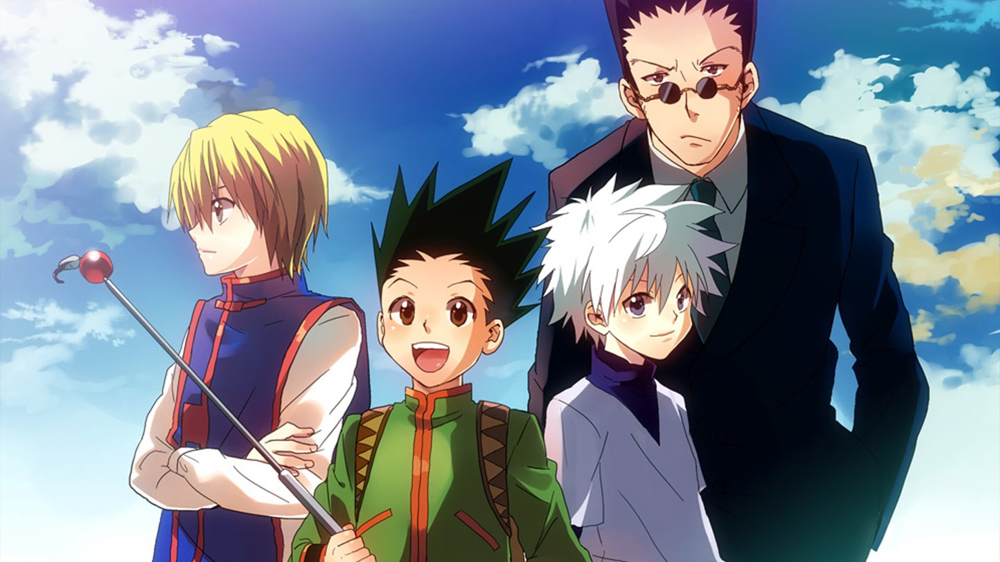
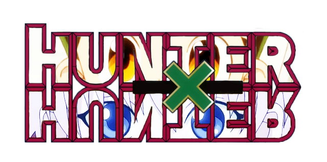
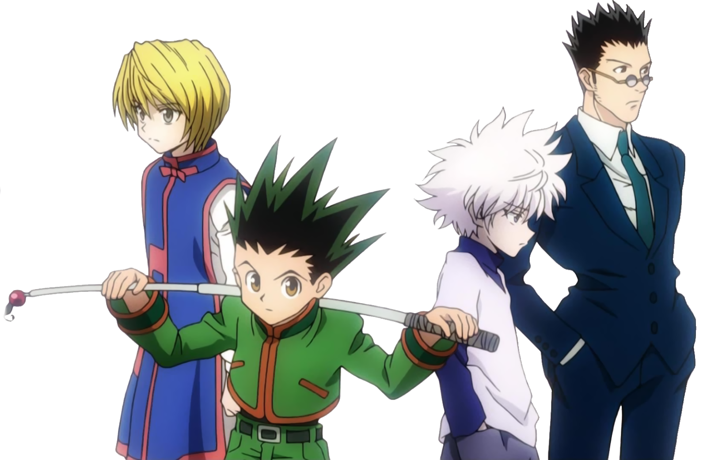

Anime Reviews
Review by KayiZokuOtaku | AniList
Shounen anime are known power-ups which makes no sense, the story behind it feels very weak and illogical, even going by the anime in questions; worlds physics and rules. It's just there to excite you up, make you excited and that in of itself is not a bad thing so to say. However, the build-up to this point, through the world, the character's is significant. This is something I would say Hunter x Hunter accomplishes very well and is one of the few who managed to hit the right notes for this and so much more.
Story
It starts with centering around a young boy, named Gon who sets out on a journey to find his father. Sounds simple enough, but it's the journey to get there and how it does it, is what makes HxH quite special and unusual. For starters, the battles are exciting and fascinating which reflects the rules set up by this world, and it does a great job of showing it to us. It's not as simple as he is the main character and he will win every battle without any real effort or trouble since it can affect us emotionally.
At one point, you will be glued to the screen watching this young boy hunting his prey for his own goals, and while he is doing so, You get to see and hear everything that is going through his head at the time, and it leaves you with his feeling of how dangerous this situation really is and how dire the consequences could become if he where to be detected by his prey. This is just one segment among many which are directed and told so well that you can't help but be glued to your screen watching this all unfold. However, there is more.
What makes it even more fascinating, is the fact that Gon is terrified while doing so, he is acutely aware that he could die if he were to mess this up and how his character portrays this, through his actions and emotions, is a job well done. He doesn't directly attack the enemy with a one-track mind, he strategies on how to hunt his prey. He learns all the ingredients necessary trough mother nature and other hunters he managed to catch a glimpse of doing his own thing.
A big factor in most shounen anime is power, and Gon is not someone anyone sane would want to mess with, even adults. For his age of 12 years old, he is quite strong and fast, and you would rather avoid getting on his wrong side if you know what's best for you. Though, being honest, if brute force were the only thing HxH had going for it, the popularity of it would make no sense.
We have another type of power and what makes it stand out from most of the others, is how complex and exciting it is. It's not as simple like just getting stronger, unlocking your potential, to mention some. It has its categories which reflect the user's personality and depending on where you have lived, spent your times most, all of this is important in figuring out your type and which category it falls in. Gon is one you would list under Enhancer; these types tend to be simple and straightforward in their demeanor.
This focuses on the physical aspect of the user, his life energy and how to use it to achieve stronger and higher power. However, it's not that easy, if you were to mess it up, you could put your entire life in danger. You need to know how much to put in each of your attacks, and this is not easy and puts our character's through grueling and intense training segments to make them able to control this power more efficiently and figure out how you would want to use it.
There is more to this power, but if I were to delve further into it, this entire review would mostly just be focused around that. What I can say, is that at one point, the anime had a one-hour explanation for this power which was one of the most exciting and mesmerizing dialogue I heard in my all time watching anime...(continue reading)
Review by Gucci | AniList
HUNTER X HUNTER
My personal opinion, (does not contain spoilers)
And here I start with the review of what has become one of my favorite animes.
I emphasize from the first moment that anyone can read it, regardless of whether the series has been seen or not.
Hunter x Hunter has a huge amount of characters. A large part of them are quite original characters, of which we will remember easily.
But as is evident, some stand out more than others. And I want to start this section talking a little about our protagonist;
Gon fulfills the requirements to be a good protagonist of an anime shonen. He is a happy boy, humble, naive, strong and with a goal in mind that will make him move constantly...(continue reading)
Review by Cresherhsm | MyAnimeList
The lack of popularity surrounding Hunter x Hunter (2011) has always confused me, especially after catching up to it six months ago. For an anime that seems to do everything right, it isn't talked about a lot at a popular level. Neither has it been successful in garnering a fan base similar to that of SNK or SAO. I decided to write this review to do the show justice. If a show this good is still flying under your radar or if you are discouraged from watching this because of its "childish appearance" then reading this review is a must.
Story:
HxH is about a young boy named Gon who embarks on a journey to find his father. After learning that his father left him at a young age to become a Hunter, Gon decides to follow in his footsteps not only to find him, but also to see what was so special about the profession that made his father choose it over him. Although a story of finding one's father is simple, it is the path that is taken towards this end that makes the series truly special. HxH is made up of several arcs that are all extremely well-written, which brings me to the best part of the series, the writing. Hunter x Hunter (2011) boasts one of the finest writing in the world of shonen; the depth and flow of the story, enthralling characterizations, strong dialogue and impressive world-building are all crafted into a fascinating tale that can absorb viewers into lengthy marathons.
The amount of variety that is packed into HxH's story is also very impressive. HxH successfully dabbles in several genres in six story arcs tackling survival, fighting tournaments, crime thriller, virtual realities, war and politics. Not only that, the series is also able to undergo significant tonal shifts with ease (light to dark and vice versa). Sometimes, these shifts in tone occur after an arc ends though other times, it even occurs mid-arc. Another thing about HxH is that its arcs are connected with one another, with each arc naturally following the one before it. This creates a natural transition that highlights what the series really is, a journey. As for pacing and development, they are excellent. For the most part, HxH is very well paced. The series does a fantastic job at keeping its viewers engaged, time will fly by as you watch most episodes and you'll find yourself breezing through the show. Excluding two recap episodes, HxH has no filler episodes. Due to this, story progression is solid with the plot moving forward with each episode.
Although HxH initially gives off a light hearted impression, it gives off a good one. Not the kind of “light heartedness” that makes you say “this is childish and below me” but the kind that appeals to everyone. HxH gives off that classic and charming shonen vibe that has been lost in recent years, and it does so with its head held up high. Eventually though, the series takes a dark turn. Although most HxH story arcs are light hearted, both Yorknew and the Chimera Ant arc are two of the best and darkest arcs shonen has to offer. Yorknew can be described as a dark thriller in a big city. The central theme of the arc is revenge and it is similar to Death Note in terms of thrill and atmosphere. On the other hand, the Chimera Ants arc can be described as an attempt by the Hunters Association to control an outbreak of a dangerous man-eating species. It is the darkest and most thematically powerful arc in the series tackling themes such as identity, human nature and survival of the fittest. The arc has drawn comparisons to Yu Yu Hakusho’s Chapter Black for its seinen-like nature and is similar to Shingeki no Kyojin, where the protagonists experience a strong sense of despair in the face of a vastly superior, hostile species. The series undergoes major tonal shifts in both arcs with the color palette, music, atmosphere and amount of violence changing significantly.
However, what sets the series apart from other battle anime is its unorthodoxy and unpredictability. Shonen tropes and storytelling methods are undermined throughout the series. The main character for example, Gon, fails more than he succeeds. Power-ups based on emotion or willpower are non-existent and fighting in the series is radically different from other battle anime. The main protagonist is not the main focus of every arc either. At certain points in the series, you could even say that Gon has taken a supporting role, especially during the later portions of the CA arc where he isn't given as much focus due to the grand scope of the story. The standard battle anime formula of “lose-train-win” is also undermined. Although there is training, it does not always translate to a victory, nor does it propel the protagonists over or to the same level as their main adversaries in terms of strength. For the most part, the protagonists assume the underdog role. Although they have incredible potential, they are still kids who have a lot to learn. In terms of storytelling, unpredictable developments are commonplace. One thing that continues to amaze me with this show is how it leads viewers into thinking that the story will progress in this direction, only to change course and arrive at a completely different outcome. A good example of this would be the series' arcs which often end in an anti-climatic manner. Basically, there are a lot of scenes and story developments that you won’t see coming because they defy conventional shonen storytelling or are unpredictable in their own right.
The series' unorthodoxy can also be seen in its fights which are primarily cerebral. In addition to being well-executed, HxH fights are smart and involve a lot of strategy. Raw power is a factor but it is not the factor that decides battle outcomes, actual power (nen abilities), experience and strategy are all taken into account. If a main character is outclassed by an opponent in all or most categories, he is likely to lose. Moreover, main characters are not given any special treatment in combat. This smart approach to fighting is further enhanced by nen, a unique and complex power system held by defined rules. The concept of nen, its principles, aura types and many applications on the battlefield reveal the huge amount of thought that was put into it. I still remember having to pause episodes, even research a bit during its introduction, just to digest it in its entirety.
The appearance and writing of the series also create an effect of cognitive dissonance, the simplistic look of the show mentally conflicts with the brilliance and unorthodoxy of its writing. As new viewers delve deeper into HxH, they realize that there is much more to the show than its cover art and synopsis suggest. Expectations of the series being immature, simple or generic are progressively overturned as the show reveals its surprising underbelly...(continue reading)
More anime reviews coming on future website developments.